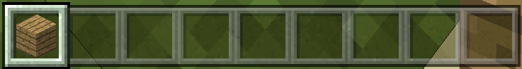
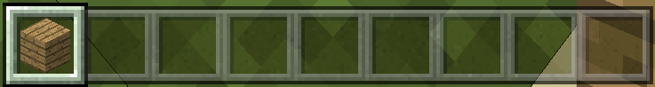
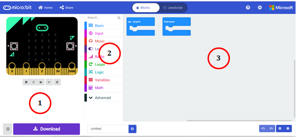

Minecraft – Karakteristikat kryesore dhe Komponentët¶
Minecraft është një lojë jashtëzakonisht e popullarizuar, argëtuese dhe krijuese 3D, ku lojtarët mund të përdorin mjetet ekzistuese për të ndërtuar struktura dhe mjete të tjera. Ka shumë mënyra që Minecraft mund të përdoret për të zhvilluar kreativitet dhe aftësi për zgjidhjen e problemeve te lojtarët.
Çdo gjë që programoni duke përdorur MakeCode do të ketë një efekt të menjëhershëm në botën tuaj të Minecraft kur ekzekutoni programin. Kjo është një mënyrë e shkëlqyeshme për të mësuar të programoni sepse do të keni mundësi të shihni ndikimin vizual të kodit tuaj menjëherë. Ky reagim i menjëhershëm do t’ju ndihmojë të zgjidhni problemet, dhe t’ju lejojë të shihni se çfarë ndikimi ka ndryshimi dhe ndryshimi i kodit tuaj në botën e lojës në Minecraft! Ky reagim që merrni nga loja mund të përdoret më pas për të përsëritur ose ndryshuar kodin.
Në këtë pjesë, ju do të mësoni se si të bashkoheni me botën e Minecraft dhe të shkruani kode (duke përdorur MakeCode) për të zgjeruar dhe kontrolluar mjedisin e Minecraft.
Instalimi i Minecraft: Education Edition¶
Për të instaluar paketën, duhet të plotësoni hapat e mëposhtëm:
Hapi 1.
Shkarko Minecraft: Education Edition nga linku: https://education.minecraft.net/get-started/download. Për të shkarkuar këtë paketë, duhet të qaseni në të përmes llogarisë së krijuar nga shkolla juaj. (Kërkoni nga mësuesi juaj tju ndihmojë).
Hapi 2.
Shkarkoni Minecraft: Education Edition në komjuterin tuaj.

Lidhja e Minecraft dhe MakeCode¶
Hapi 1.
Hapni Minecraft dhe logohuni në kompjuterin tuaj Minecraft: Education Edition duke përdorur llogarinë tuaj.

Hapi 2.
Pasi të keni hyrë në internet, së pari duhet të krijoni një botë duke shtypur butonin Play.

Kliko butonin Create New në dritaren e dialogut Worlds. Këtu mund të gjeni edhe disa shembuj botërore të krijuar tashmë. Ju mund të krijoni botën tuaj duke klikuar butonin Create New World.

Hapi 3.
Do të hapet një dritare ku mund të rregulloni cilësimet për botën tuaj. Tani për tani, lini gjithçka siç e shihni, përveç në pjesën Cheats, ku duhet të rrëshqisni butonin Activate Cheats në pozicionin ON, kështu që ju të jeni në gjendje të kodoni në Minecraft nga duke përdorur MakeCode.

Hapi 4.
Pasi të keni vendosur të gjitha opsionet për botën tuaj të re, të cilat mund t’i ndryshoni në çdo pikë, klikoni në butonin Create.

Duke bërë këtë, ju keni krijuar botën tuaj, ku tani mund të vendosni blloqet tuaja.
Hapi 5.
Për të qenë në gjendje të programoni (kodoni) në Minecraft, duhet të shkruani shkronjën “c”. Dritarja Code Builder do të shfaqet në listën e aplikacioneve që mund të përdorni për kodim. Zgjidh Microsoft MakeCode:

Ekrani fillestar i MakeCode do të shfaqet në dritaren Code Builder.

Zgjidhni opsionin New Project nga lista My projects për të krijuar një projekt të ri. Në rast se dëshironi të provoni programe të tjera, ju mund të zgjidhni një nga shembujt ekzistues nga lista e Tutorials.
Pasi të keni krijuar një projekt të ri në Code Builder, ndërfaqja e përdoruesit MakeCode do të hapet dhe mund të filloni kodimin:

Që të shkruani kod në Minecraft: Education Edition, kliko butonin  .
.
Ndërfaqja e përdoruesit Minecraft¶

Ju kontrolloni gjithçka në Minecraft me çelësat e tastierës tuaj, të cilat ju ndihmojnë të lëvizni dhe të kryeni detyra të ndryshme.
Lista e disa kontrolleve të Minecraft:
 - Pause
- Pause
 - Toolbar Selection 
- Toolbar Selection 
{kind=link}
Q - Artikulli i lëshimit (blloqet)
W - Shkoni përpara (nëse e shtypni atë dy herë që mund të vraponi, ose notoni nëse jeni në ujë)
A - Lëviz majtas
S - Lëviz mbrapa
E - Inventari
D - Lëvizni djathtas
 - Karakteri kërcen
Mouse përdoret për të kontrolluar kamerën, domethënë për të parë botën përreth nesh. Shtypja e butonit F5 ndryshon këndin e kamerës.
Ndërfaqja e përdoruesit në MakeCode¶
Ky redaktues në internet siguron mundësinë e kodimit në JavaScript ose programim grafik (bllok), ku komandat janë grumbulluar duke përdorur teknikën “drag and drop”.
Në mes të ekranit është paleta e bllokut (1) ku të gjitha komandat (blloqet) janë rregulluar në grupe. Në anën e djathtë, ka një zonë pune (2) ku mund të tërhiqni komanda dhe të ndërtoni programe.

Paleta e bllokut përbëhet nga kategori të ndryshme blloqesh, të cilat kanë qëllime dhe përdorime të ndryshme. Blloqet e komandave ndahen në kategori.

Në MakeCode, programet përbëhen nga blloqe të ndryshme të lidhura. Blloqet (komandat) ndahen në kategori.
Emri i kategorisë (p.sh. Player) i tregon përdoruesit se cili lloj komande (bllok) përfshihet në atë kategori specifike. Të gjitha blloqet që i përkasin një kategorie janë të njëjtën ngjyrë.
Ne tërheqim secilin bllok në sipërfaqen e punës, dhe pastaj i lidhim ato me blloqe të tjera në varësi të programit që duam të krijojmë. Duke klikuar me të djathtën në një bllok hapet një menyë drop-down që përmban opsionin i cili ju lejon të krijoni kopje (Copy), shtoni komente (Add comment), fshini blloqe (Delete Block), si dhe opsionin me të cilin mund të hapni seksionin e informacionit për ndihmë shtesë në lidhje me blloqe të caktuara (Ndihmë).

Është koha për të përdorur blloqet dhe për të krijuar programin tonë të parë në MakeCode.
Projekte¶
Në mësimet e mëposhtme, ne do të prezantojmë disa projekte interesante për programimin e Minecraft duke përdorur platformën MakeCode. Të gjitha projektet bëhen hap pas hapi, kështu që të gjithë mund t’i bëjnë përsëri. Të gjitha procedurat për ndërtimin e projekteve janë shtjelluar, nga mënyra se si është krijuar programi deri në atë se si është testuar.